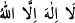
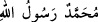
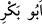
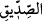
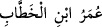
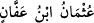
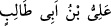
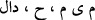

Kişi çok övüldüğünde “Falanca kişi mahmûddur” denir. Övülen güzel hasletleri çok
olunca “Muhammed” denir. Nitekim el-Müfredât’ta böyle geçmektedir.
Şeyh Zekeriyyâ, Şerhu’l-Mukaddimeti’l-Cezeriyye’de şöyle der: Muhammed,
övülmüş olmakta ileri giden demektir. Muhammed; inançları, amelleri, sözleri ve ahlâkı
övülmüş olandır.
Dedesi Abdülmuttalib, bu ismi O’na doğumunun yedinci gününde Allah’tan bir
ilhamla vermiştir. Abdülmuttalib’e: “Senin atalarının ve kavminin isimlerinden
olmadığı halde niçin ona bu ismi verdin?” diye sorulunca, “Ben O’nun gökte ve yerde
övülecek olmasını umuyorum.” demiştir. Allah da O’nun bu ümidini ve hayra yormasını
gerçekleştirmiştir. İşte Hz. Peygamberimiz (s.a.) sevilen hasletleri ve rağbet edilen
şemâili ile Allah nezdinde, mukarreb melekler, nebîler ve rasuller ve tüm dünyâ ehli
katında övülen birisi olmuştur. Her ne kadar bazıları onu inkâr etse de O’nda bulunan
kemal sıfatlar, her akıllı kimse tarafından övgüye lâyık bulunmuştur.
Allâh’ın bin ismi olduğu gibi O’nun da (s.a.) bin ismi vardır. O’nun bütün isimleri,
O’nun sâhip olduğu övülmeyi ve kendisine kemâli isnâd etmeyi zorunlu kılan sıfatlardan
türemiştir. O’nun her vasfına dâir bir ismi vardır. Nitekim O, el-Mâhî’dir. Çünkü Allah
O’nunla küfrü, yâni O’nun peygamber olarak gönderilmeden önceki küfrün şiddetini ve
kuvvetini mahvedip ortadan kaldırmıştır. O, “el-Hâşir”dir. Çünkü insanlar O’nun
izinde ve O’ndan sonra haşredilir. O, “el-Âkıb”dır. Çünkü O, tüm peygamberlerin
ardından gelmiştir.
Muhammed kelimesindeki mim harfi, O’nun son peygamber olduğuna işâret
etmektedir. Çünkü mim harfinin mahreci, mahreclerin sonuncusudur. Yine mim harfi
O’nun kırk yaşında peygamber olarak gönderileceğine işârettir.[223]
İmam Nîsâbûrî şöyle demiştir: “Rasûlullah (s.a.)’in ism-i şerîfinin dört harf olması,
Allah Teâlâ’nın ismine muvafık olması içindir. Nitekim “__WORD__ gibi “__WORD__
da on iki harftir. İşte bu, münâsebetin sırlarındandır. Yine bu Muhammediyyet makamına
ahlâklarının uygunluğunun kemâl üzere olması sebebiyle “__WORD__
”, “__WORD__,
“__WORD__ ve “__WORD__ lafızları da on ikişer harftir. Yine bu uygunluk ve
münâsebet sebebiyle onların nesebi, Rasûlullah (s.a.)’in nesebi ile birleşir. Hz. Ali
(k.v.)’in nesebi ikinci babada (dedede), Hz. Osman (r.a.)’ın nesebi beşinci babada, Hz.
Ebû Bekir (r.a.)’ın nesebi yedinci babada, Hz. Ömer (r.a.)’ın nesebi ise dokuzuncu
babada birleşir.
Muhammed kelimesi, ebced hesabına göre değil, bast hesabına göre sayı değeri
rasullerin sayısı olan 313’tür. Çünkü bast hesabına göre iki mim ve idğam olunan mim “__WORD__ hesab edildiğinde bu sayıya ulaşılır.
Molla Câmî şöyle demiştir:
Senin Muhammed’in sonsuz olarak Hak’tan gibidir,
Onun (Muhammed) ismi O’ndan türemiştir.